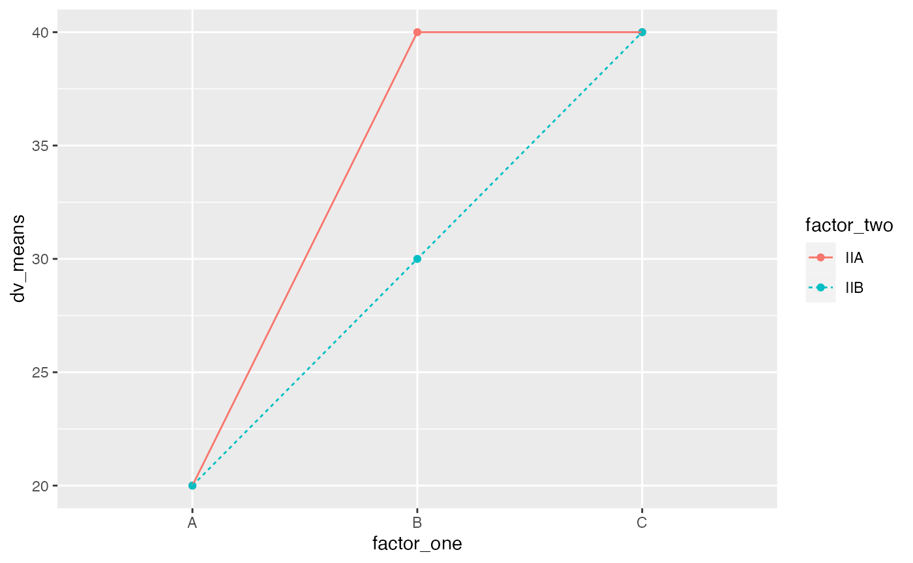

Coding Reference
reference_code.RmdThis page contains minimal explanations and examples for common coding patterns in base R and tidyverse. Students can make content requests and contribute to this reference page, just leave a message on the github issues for this course repository.
Base R
Base R refers to intrinsics capabilities of R that come with a fresh installation of R. No additional libraries are needed.
Variables
a is the variable name. <- is the assignment operator. In this example, 1 is being assigned into the object named a.
a <- 1Variables have classes that describe their contents.
x <- 1
class(x)
#> [1] "numeric"
y <- "1"
class(y)
#> [1] "character"
z <- TRUE
class(z)
#> [1] "logical"Classes allow and disallow some commands. For example, you can’t add a numeric to a character:
x+y
#> Error in x + y: non-numeric argument to binary operatorClasses can be converted:
y <- as.numeric(y)
x+y
#> [1] 2Vectors
Vectors are 1-dimensional objects that have a name, and can hold multiple elements of the same class. The number of elements in the vector is the vector length. Manipulating vectors involves creating them, and storing, retrieving, and changing elements inside of the vector.
Vector Creation
There are multiple ways to create a vector
a <- c() # create a NULL vector
a
#> NULL
a <- 1:5 # assign a sequence to a name
a
#> [1] 1 2 3 4 5
a <- c(1,2,3,4,5) # assign a vector made with combine c()
a
#> [1] 1 2 3 4 5
#pre-assign an empty vector
a <- vector(mode = "numeric", length=10)
a
#> [1] 0 0 0 0 0 0 0 0 0 0
a <- vector(mode = "integer", length=10)
a
#> [1] 0 0 0 0 0 0 0 0 0 0
a <- vector(mode = "logical", length=10)
a
#> [1] FALSE FALSE FALSE FALSE FALSE FALSE FALSE FALSE FALSE FALSE
a <- vector(mode = "character", length=10)
a
#> [1] "" "" "" "" "" "" "" "" "" ""length() returns the number of elements in the vector
Vector Combination
It is possible to combine existing vectors together to make a new vector using c().
x <- 1:5
y <- 6:10
x
#> [1] 1 2 3 4 5
y
#> [1] 6 7 8 9 10
z <- c(x,y)
z
#> [1] 1 2 3 4 5 6 7 8 9 10However, if you attempt to combine vectors of different classes, R will throw an error, or it will coerce (convert) one of the vectors into the class of the other.
Vector Indexing
Vector indexing is the the process of isolating specific positions or elements of a vector. Vector indexing uses the [] notation.
The general syntax is vector_name[positions], where vector_name is the name of your vector, and positions is a vector of positions to index.
a <- c(23,34,45,56,67,78,89)
a[1] # returns the element in position 1
#> [1] 23
a[1:3] # returns elements in positions 1 to 3
#> [1] 23 34 45
a[c(4,5,6)]
#> [1] 56 67 78
a[c(1,1,1)]
#> [1] 23 23 23Logical vectors can indicate positions. In this case, elements in TRUE positions will be returned
Vector indexing and assignment
Vector indexing can also be used to assign new elements to the indexed positions.
a <- c(45,56,78)
a
#> [1] 45 56 78
a[3] <- 100
a
#> [1] 45 56 100
a[1:3] <- "Hello"
a
#> [1] "Hello" "Hello" "Hello"Logical indexing
Vectors can be indexing using logical comparisons (see section on logic for further explanation and examples of logical comparisons).
a <- c(1,3,2,4,3,4)
a == 4 # create logical vector of positions containing 4
#> [1] FALSE FALSE FALSE TRUE FALSE TRUE
# inserting the above into a[] finds the elements equal to 4
a[a == 4] # elements equal to 4
#> [1] 4 4
a[a < 4] # elements less than 4
#> [1] 1 3 2 3
a[a <= 4] # elements less than or equal to 4
#> [1] 1 3 2 4 3 4
a[a != 1] # elements not equal to 1
#> [1] 3 2 4 3 4Data.frame
Data.frames are 2-d storage objects, like a table (or excel sheet), they have columns and rows.
a <- data.frame() # make an empty data.frame
a
#> data frame with 0 columns and 0 rows
class(a)
#> [1] "data.frame"Data.frame creation
A common method to create a data.frame involves adding existing vectors together. Data.frames are often also created when loading in data files that are 2-d tables. See also the section on using dplyr to manipulate data in dataframes. Data.frames are also similar to data.tables, and tibbles, and can usually be interchanged.
x <- c(1,2,3)
y <- c("a","b","c")
z <- c(TRUE, TRUE,TRUE)
a <- data.frame(x,y,z)
a
#> x y z
#> 1 1 a TRUE
#> 2 2 b TRUE
#> 3 3 c TRUEdim() returns the number of rows and columns in the data.frame
dim(a)
#> [1] 3 3Indexing by column name
Each column in a data.frame has a name, and can be accessed using the $ syntax:
Indexing with [rows,columns]
Data.frames have rows and columns, and can be indexed using [rows,columns] notation, where rows is a vector of row numbers, and columns is a vector of column numbers
a
#> new_x Why Zee
#> 1 1 a TRUE
#> 2 2 b TRUE
#> 3 3 c TRUE
a[1,] # row 1
#> new_x Why Zee
#> 1 1 a TRUE
a[,1] # column 1
#> [1] 1 2 3
a[1:2,] # rows 1 to 2
#> new_x Why Zee
#> 1 1 a TRUE
#> 2 2 b TRUE
a[,1:2] # columns 1 to 2
#> new_x Why
#> 1 1 a
#> 2 2 b
#> 3 3 c
a[1:2,1:2] #rows 1 to 2 and columns 1 to 2
#> new_x Why
#> 1 1 a
#> 2 2 b
a[1:2,'new_x'] # Column names can be used
#> [1] 1 2row and column binding
It is possible to add more rows using rbind(), and add more columns using cbind().
# row bind a copy of a to itself
a
#> new_x Why Zee
#> 1 1 a TRUE
#> 2 2 b TRUE
#> 3 3 c TRUE
a <- rbind(a,a)
dim(a)
#> [1] 6 3
# create a new vector, add it as a new column
my_new <- c(1,4,3,2,4,5)
a <- cbind(a,my_new)
a
#> new_x Why Zee my_new
#> 1 1 a TRUE 1
#> 2 2 b TRUE 4
#> 3 3 c TRUE 3
#> 4 1 a TRUE 2
#> 5 2 b TRUE 4
#> 6 3 c TRUE 5Indexing and assignment
The elements in a data.frame can be re-assigned by your_dataframe[row:position] <- new stuff. It is generally necessary that any new elements have the same class as the original elements
a
#> new_x Why Zee my_new
#> 1 1 a TRUE 1
#> 2 2 b TRUE 4
#> 3 3 c TRUE 3
#> 4 1 a TRUE 2
#> 5 2 b TRUE 4
#> 6 3 c TRUE 5
a[,1] <- 5 #assign column 1 all 5s
a$Why <- c("new","words","are","going","in","here")
a
#> new_x Why Zee my_new
#> 1 5 new TRUE 1
#> 2 5 words TRUE 4
#> 3 5 are TRUE 3
#> 4 5 going TRUE 2
#> 5 5 in TRUE 4
#> 6 5 here TRUE 5
a[6,3] <- FALSE # row 6, column 3
a
#> new_x Why Zee my_new
#> 1 5 new TRUE 1
#> 2 5 words TRUE 4
#> 3 5 are TRUE 3
#> 4 5 going TRUE 2
#> 5 5 in TRUE 4
#> 6 5 here FALSE 5Lists
Lists are objects that can store more arbitrary elements of any class, including vectors, dataframes, and even more lists. Lists are commonly used to store results from a model, especially when the model returns many different kinds of results in different formats.
Here we create a list with three elements, a scalar, a vector, and a dataframe.
x <- 1
y <- c(1,2,3,4,5)
z <- data.frame(a= 1:5, b=1:5, c=1:5)
my_list <- list(x, y, z)
my_list
#> [[1]]
#> [1] 1
#>
#> [[2]]
#> [1] 1 2 3 4 5
#>
#> [[3]]
#> a b c
#> 1 1 1 1
#> 2 2 2 2
#> 3 3 3 3
#> 4 4 4 4
#> 5 5 5 5List indexing
Access elements in the list using [[]]
my_list[[1]]
#> [1] 1
my_list[[2]]
#> [1] 1 2 3 4 5
my_list[[3]]
#> a b c
#> 1 1 1 1
#> 2 2 2 2
#> 3 3 3 3
#> 4 4 4 4
#> 5 5 5 5Named elements
Elements in a list can be given names, and indexed by name:
x <- 1
y <- c(1,2,3,4,5)
z <- data.frame(a= 1:5, b=1:5, c=1:5)
my_list <- list(ex = x, why = y,zee= z)
my_list
#> $ex
#> [1] 1
#>
#> $why
#> [1] 1 2 3 4 5
#>
#> $zee
#> a b c
#> 1 1 1 1
#> 2 2 2 2
#> 3 3 3 3
#> 4 4 4 4
#> 5 5 5 5
my_list$ex
#> [1] 1
my_list$why
#> [1] 1 2 3 4 5
my_list$zee
#> a b c
#> 1 1 1 1
#> 2 2 2 2
#> 3 3 3 3
#> 4 4 4 4
#> 5 5 5 5
my_list[["ex"]]
#> [1] 1
my_list[["why"]]
#> [1] 1 2 3 4 5
my_list[["zee"]]
#> a b c
#> 1 1 1 1
#> 2 2 2 2
#> 3 3 3 3
#> 4 4 4 4
#> 5 5 5 5Add/Remove elements in lists
It is possible to assign new names elements to a list, e.g.:
my_list[["new_thing"]] <- 12345
my_list
#> $ex
#> [1] 1
#>
#> $why
#> [1] 1 2 3 4 5
#>
#> $zee
#> a b c
#> 1 1 1 1
#> 2 2 2 2
#> 3 3 3 3
#> 4 4 4 4
#> 5 5 5 5
#>
#> $new_thing
#> [1] 12345
#set an element to NULL removes it
my_list[["zee"]] <- NULL
my_list
#> $ex
#> [1] 1
#>
#> $why
#> [1] 1 2 3 4 5
#>
#> $new_thing
#> [1] 12345Logic
Logic statements are used to compare two things, or two sets of things. The output of comparison is a TRUE or FALSE statment. If many things are being compared at once, the output could be many TRUE or FALSE statements for each comparison
Greater than/ less than
1 > 1 # is 1 greater than 1?
#> [1] FALSE
5 > 1 # is 5 greater than 1?
#> [1] TRUE
3 < 2 # is 3 less than 2?
#> [1] FALSE
3 < 1 # is 3 less than 1?
#> [1] FALSE
c(1,2,3) > c(2,1,3) # ask the question element by element
#> [1] FALSE TRUE FALSE
c(1,2,3) < c(2,1,3)
#> [1] TRUE FALSE FALSE
2 > c(1,2,3) # is greater than each of the numbers
#> [1] TRUE FALSE FALSE>= <=
Is something greater than or equal to something else
1 >= 1 # is 1 greater than 1?
#> [1] TRUE
5 >= 1 # is 5 greater than 1?
#> [1] TRUE
3 <= 2 # is 3 less than 2?
#> [1] FALSE
3 <= 1 # is 3 less than 1?
#> [1] FALSE
c(1,2,3) >= c(2,1,3) # ask the question element by element
#> [1] FALSE TRUE TRUE
c(1,2,3) <= c(2,1,3)
#> [1] TRUE FALSE TRUE
2 >= c(1,2,3) # is greater than each of the numbers
#> [1] TRUE TRUE FALSEAND
The ampersand & is used for AND, which allows use to evaluate whether two or more properties are all TRUE.
IF ELSE
A roller-coaster operator checks if people are taller than a line to see if they can ride the coaster. This is an IF ELSE control structure. IF the person is taller than the line, then they can go on the ride; ELSE (otherwise) the person can not go on the ride.
In other words, IF the situation is X, then do something; ELSE (if the situation is not X), then do something different.
IF and ELSE statements let us specify the conditions when specific actions are taken. Generally, IF and ELSE statements are used inside loops (for, or while, or repeat loops), because at each step or iteration of the loop, we want to check something, and then do something.
Consider this:
a <- 1 # define a to be a 1
if(a==1){
print(a) # this is what happens if a==1
} else {
print("A is not 1") # this is what happens if a is not 1
}
#> [1] 1
a <- 2 # define a to be a 1
if(a==1){
print(a) # this is what happens if a==1
} else {
print("A is not 1") # this is what happens if a is not 1
}
#> [1] "A is not 1"Normally we find IF and ELSE in a loop like this:
a <- c(1,0,1,0,0,0,1) # make a variable contain 1s and 0s
# write a loop to check each element in the variable
# and do different things depending on the element
for(i in a){
if(i == 1){
print("I'm a 1") # what to do when i is 1
} else {
print("I'm not a 1") # what to do when i is not 1
}
}
#> [1] "I'm a 1"
#> [1] "I'm not a 1"
#> [1] "I'm a 1"
#> [1] "I'm not a 1"
#> [1] "I'm not a 1"
#> [1] "I'm not a 1"
#> [1] "I'm a 1"We can have multiple conditions in our if statements. See the next section on loops for more info about using loops.
a <- c(1,2,3,1,2,0,1) # make a variable contain 1s and 0s
# write a loop to check each element in the variable
# and do different things depending on the element
for(i in a){
if(i == 1){
print("I'm a 1") # what to do when i is 1
} else if (i==2){
print("I'm a 2") # what to do when i is 2
} else if (i==3){
print("I'm a 3") # what to do when i is 3
} else {
print("I'm not any of the above") #what to do when none are true
}
}
#> [1] "I'm a 1"
#> [1] "I'm a 2"
#> [1] "I'm a 3"
#> [1] "I'm a 1"
#> [1] "I'm a 2"
#> [1] "I'm not any of the above"
#> [1] "I'm a 1"Loops
Check R help for on Control Flow ?Control.
for(){} for(loop control){do something each iteration}
for(iterator in vector){
#do something
}Loop control is defined in between the parentheses. The name of the iterator is placed on the left of in(can be assigned any name you want, does not need to be declared in advance). During the execution of the loop, the iterator takes on the values inside the vector which is placed on the right side of in. Specifically, the following is happening.
Loop steps: 1. iterator <- vector[1] 2. iterator <- vector[2] 3. iterator <- vector[3] 4. etc.
The loop will automatically stop once it reaches the last item in the vector. The loop can be stopped before that using the break command.
# Make a loop do something 5 times
# i is the iterator
# 1:5 creates a vector with 5 numbers in it, 1, 2, 3, 4, 5
# the loop will run 5 times, because there are five things to assign to i
for(i in 1:5){
print("hello")
}
#> [1] "hello"
#> [1] "hello"
#> [1] "hello"
#> [1] "hello"
#> [1] "hello"
# show the value of i each step of the loop
for(i in 1:5){
print(i)
}
#> [1] 1
#> [1] 2
#> [1] 3
#> [1] 4
#> [1] 5
# define the vector to loop over in advance
x <- 1:5
for(i in x){
print(i)
}
#> [1] 1
#> [1] 2
#> [1] 3
#> [1] 4
#> [1] 5
# Reminder that i becomes the next value in the vector
# your vector can have any order
my_sequence <- c(1,5,2,3,4)
for(i in my_sequence){
print(i)
}
#> [1] 1
#> [1] 5
#> [1] 2
#> [1] 3
#> [1] 4
# index vector does not need to be numbers
my_things <- c("A","B","C","D")
for(i in my_things){
print(i)
}
#> [1] "A"
#> [1] "B"
#> [1] "C"
#> [1] "D"Breaking a loop
break stops a loop. Used with logical statements to define the conditions necessary to cause the break.
for(i in 1:10){
if(i <5){
print(i)
} else{
break
}
}
#> [1] 1
#> [1] 2
#> [1] 3
#> [1] 4While loops
While loops run until a logical condition is met. Here there is no iterator, just a logic statement that needs to be met.
This one prints i while i is less than 6. As soon as i becomes “not less than 6”, then the loop stops. Critically, inside the loop, the value of i increases each iteration.
i <- 1 # create an variable
while (i < 6) {
print(i)
i = i+1 #add one eachs step of the loop
}
#> [1] 1
#> [1] 2
#> [1] 3
#> [1] 4
#> [1] 5Repeat loops
Similar to while, but let’s do things until a condition is met.
i<-0
repeat{
i<-i+1
print(i)
if(i==5){
break
}
}
#> [1] 1
#> [1] 2
#> [1] 3
#> [1] 4
#> [1] 5Examples
Braces are not needed on one line
for(i in 1:5) print(i)
#> [1] 1
#> [1] 2
#> [1] 3
#> [1] 4
#> [1] 5Using the value of the iterator to assign in values systematically to another variable.
# put 1 into the first five positions of x
x <- c() # create empty vector
for(i in 1:5){
x[i] <- 1 # assign 1 to the ith slot in x
}
x
#> [1] 1 1 1 1 1
# put the numbers 1-5 in the first 5 positions of x
x <-c()
for(i in 1:5){
x[i] <- i
}
x
#> [1] 1 2 3 4 5Make your own counter, when you need one
a <- c(1,4,3,5,7,6,8,2)
odd <- c()
counter <- 0
for(i in a){ # i will the values of a in each position
counter <- counter+1
if(i%%2 != 0){
odd[counter] <- "odd"
} else {
odd[counter] <- "even"
}
}
odd
#> [1] "odd" "even" "odd" "odd" "odd" "even" "even" "even"
# An alternative strategy
a <- c(1,4,3,5,7,6,8,2)
odd <- c()
# 1:length(a) creates a sequence from 1 to length
for(i in 1:length(a)){
if(a[i]%%2 != 0){
odd[i] <- "odd"
} else {
odd[i] <- "even"
}
}
odd
#> [1] "odd" "even" "odd" "odd" "odd" "even" "even" "even"Nesting loops
for(i in 1:5){
for(j in 1:5){
print(c(i,j))
}
}
#> [1] 1 1
#> [1] 1 2
#> [1] 1 3
#> [1] 1 4
#> [1] 1 5
#> [1] 2 1
#> [1] 2 2
#> [1] 2 3
#> [1] 2 4
#> [1] 2 5
#> [1] 3 1
#> [1] 3 2
#> [1] 3 3
#> [1] 3 4
#> [1] 3 5
#> [1] 4 1
#> [1] 4 2
#> [1] 4 3
#> [1] 4 4
#> [1] 4 5
#> [1] 5 1
#> [1] 5 2
#> [1] 5 3
#> [1] 5 4
#> [1] 5 5
# example of using nested loops to fill the contents
# of a matrix
my_matrix <- matrix(0,ncol=5,nrow=5)
for(i in 1:5){
for(j in 1:5){
my_matrix[i,j] <- i*j
}
}
my_matrix
#> [,1] [,2] [,3] [,4] [,5]
#> [1,] 1 2 3 4 5
#> [2,] 2 4 6 8 10
#> [3,] 3 6 9 12 15
#> [4,] 4 8 12 16 20
#> [5,] 5 10 15 20 25break exits out of the immediate loop
# the inside loop stops when i+j is greater than 5
# the outside loop keeps going
sum_of_i_j <- c()
counter <- 0
for(i in 1:5){
for(j in 1:5){
counter <- counter+1
sum_of_i_j[counter] <- i+j
if(i+j > 5){
break
}
}
}
sum_of_i_j
#> [1] 2 3 4 5 6 3 4 5 6 4 5 6 5 6 6Functions
This section discusses the syntax for writing custom functions in R.
function syntax
function_name <- function(input1,input2){
#code here
return(something)
}example functions
This function has no input between the (). Whenever you run this function, it will simply return whatever is placed inside the return statement.
# define the function
print_hello_world <- function(){
return(print("hello world"))
}
# use the function
print_hello_world()
#> [1] "hello world"This function simply takes an input, and then returns the input without modifying it.
return_input <- function(input){
return(input)
}
# the variable input is assigned a 1
# then we return(input), which will result in a 1
# because the function internally assigns 1 to the input
return_input(1)
#> [1] 1
a <- "something"
return_input(a)
#> [1] "something"This function takes an input, then creates an internal variable called temp and assigns input+1. Then the contents of temp is returned. Note there, is no checking of the input, so it will return an erro if you input a character (can’t add one to a character in R)
add_one <- function(input){
temp <- input+1
return(temp)
}
add_one(1)
#> [1] 2
add_one("a")
#> Error in input + 1: non-numeric argument to binary operatorThis function adds some input checking. We only add one if the input is a numeric type. Otheriwse, we use stop() to return an error message to the console
add_one <- function(input){
if(class(input) == "numeric"){
temp <- input+1
return(temp)
} else {
return(stop("input must be numeric"))
}
}
add_one(1)
#> [1] 2
add_one("a")
#> Error in add_one("a"): input must be numericA function with three inputs
add_multiply <- function(input, x_plus,x_times){
temp <- (input+x_plus)*x_times
return(temp)
}
# input is 1
# x_plus <- 2
# x_times <- 3
# will return (1+2)*3 = 9
add_multiply(1,2,3)
#> [1] 9Tidyverse
The tidyverse is a set of popular R packages that are convenient for many aspects of data-analysis. All of the tidyverse packages can be installed in one go:
install.packages("tidyverse")dplyr
The dplyr package has several useful functions for manipulating and summarizing data.frames. To illustrate some dplyr functionality we first create a small fake data.frame. Here is a link to the dplyr cheatsheet
subjects <- rep(1:10)
grades <- rnorm(n = 10, mean = 65, sd = 5)
age <- sample(18:20,10,replace=TRUE)
likes_chocolate <- sample(c(TRUE,FALSE), 10, replace=TRUE)
favorite_color <- sample(c("r","o","y","g","b","i","v"), 10, replace=TRUE)
fake_data <- data.frame(subjects,
grades,
age,
likes_chocolate,
favorite_color)
knitr::kable(head(fake_data))| subjects | grades | age | likes_chocolate | favorite_color |
|---|---|---|---|---|
| 1 | 58.43861 | 19 | FALSE | y |
| 2 | 59.87624 | 20 | FALSE | v |
| 3 | 72.17475 | 18 | FALSE | y |
| 4 | 60.72828 | 20 | TRUE | o |
| 5 | 59.12523 | 18 | TRUE | o |
| 6 | 64.32323 | 20 | TRUE | r |
group_by and summarize
group_by() allows you to specify columns to split into groups for analysis, these groups are the levels of the column (e.g., unique entries in the column)
summarize() conducts an analysis for each group identified in the group_by step. The analysis is defined by variable names, and supplying a function that computes a value given the name of a measurement variable.
library(dplyr)
#>
#> Attaching package: 'dplyr'
#> The following objects are masked from 'package:stats':
#>
#> filter, lag
#> The following objects are masked from 'package:base':
#>
#> intersect, setdiff, setequal, union
fake_data %>%
group_by(likes_chocolate) %>%
summarize(mean_grade = mean(grades),
sd_grad = sd(grades))
#> # A tibble: 2 × 3
#> likes_chocolate mean_grade sd_grad
#> <lgl> <dbl> <dbl>
#> 1 FALSE 65.4 7.75
#> 2 TRUE 61.4 2.18
fake_data %>%
group_by(likes_chocolate,age) %>%
summarize(mean_grade = mean(grades),
sd_grad = sd(grades))
#> `summarise()` has grouped output by 'likes_chocolate'. You can override using the `.groups` argument.
#> # A tibble: 5 × 4
#> # Groups: likes_chocolate [2]
#> likes_chocolate age mean_grade sd_grad
#> <lgl> <int> <dbl> <dbl>
#> 1 FALSE 18 73.1 1.25
#> 2 FALSE 19 57.7 1.01
#> 3 FALSE 20 65.5 7.90
#> 4 TRUE 18 60.4 1.75
#> 5 TRUE 20 62.5 2.54filter
Filter out rows depending on logical comparisons
fake_data %>%
filter(grades < 65)
#> subjects grades age likes_chocolate favorite_color
#> 1 1 58.43861 19 FALSE y
#> 2 2 59.87624 20 FALSE v
#> 3 4 60.72828 20 TRUE o
#> 4 5 59.12523 18 TRUE o
#> 5 6 64.32323 20 TRUE r
#> 6 7 57.01695 19 FALSE r
#> 7 10 61.59502 18 TRUE b
fake_data %>%
filter(grades < 65,
likes_chocolate == TRUE)
#> subjects grades age likes_chocolate favorite_color
#> 1 4 60.72828 20 TRUE o
#> 2 5 59.12523 18 TRUE o
#> 3 6 64.32323 20 TRUE r
#> 4 10 61.59502 18 TRUE bselect
Select specific columns
fake_data %>%
select(grades)
#> grades
#> 1 58.43861
#> 2 59.87624
#> 3 72.17475
#> 4 60.72828
#> 5 59.12523
#> 6 64.32323
#> 7 57.01695
#> 8 71.04540
#> 9 73.93889
#> 10 61.59502
fake_data %>%
select(grades,likes_chocolate)
#> grades likes_chocolate
#> 1 58.43861 FALSE
#> 2 59.87624 FALSE
#> 3 72.17475 FALSE
#> 4 60.72828 TRUE
#> 5 59.12523 TRUE
#> 6 64.32323 TRUE
#> 7 57.01695 FALSE
#> 8 71.04540 FALSE
#> 9 73.93889 FALSE
#> 10 61.59502 TRUEmutate
mutate() can add a column
fake_data <- fake_data %>%
mutate(new_thing = 0)
fake_data
#> subjects grades age likes_chocolate favorite_color new_thing
#> 1 1 58.43861 19 FALSE y 0
#> 2 2 59.87624 20 FALSE v 0
#> 3 3 72.17475 18 FALSE y 0
#> 4 4 60.72828 20 TRUE o 0
#> 5 5 59.12523 18 TRUE o 0
#> 6 6 64.32323 20 TRUE r 0
#> 7 7 57.01695 19 FALSE r 0
#> 8 8 71.04540 20 FALSE y 0
#> 9 9 73.93889 18 FALSE g 0
#> 10 10 61.59502 18 TRUE b 0ggplot2
ggplot2 is a library created by Hadley Wickham for plotting and graphing results, and refers to a “grammar of graphics”, or a standardized syntax and organization for graphing.
ggplot2 additional resources
- https://ggplot2.tidyverse.org
- https://r4ds.had.co.nz/data-visualisation.html
- https://ggplot2-book.org
- http://r-statistics.co/ggplot2-Tutorial-With-R.html
- https://datacarpentry.org/R-ecology-lesson/04-visualization-ggplot2.html
Add-on packages
- https://www.ggplot2-exts.org A repository of 50+ add on packages for ggplot2
-
https://gganimate.com
- allows you to create animated .gifs of ggplots
- I made a bunch of animated gifs for a statistics textbook. They are all here along with the code https://crumplab.github.io/statistics/gifs.html
- ggrepel allows you to repel overlapping text labels away from each other.
- esquisse a GUI (graphic user interface) that allows you make ggplot graphs using drag-drop, and clickable options
- ggedit similar to above, clickable editing of ggplot graphs
-
plotly a package similar to ggplot, makes a whole variety of graphs, mainly for use in websites. Allows interactive graphs.
- As an example, I used plotly on my publications website, if you hover over the dots, info pops up https://crumplab.github.io/Publications.html.
-
ggpubr (install from CRAN), many useful things, including the
ggarrangefunction which allows you to knit multiple plots together - ggthemes extra themes, scales, and geoms
Scatterplot
# Create dataframe
a <- c(1,2,3,2,3,4,5,4)
b <- c(4,3,4,3,2,1,2,3)
plot_df <- data.frame(a,b)
# basic scatterplot
ggplot(plot_df, aes(x=a,y=b))+
geom_point()
# customize, add regression line
ggplot(plot_df, aes(x=a,y=b))+
geom_point(size=2)+
geom_smooth(method=lm)+
coord_cartesian(xlim=c(0,7),ylim=c(0,10))+
xlab("x-axis label")+
ylab("y-axis label")+
ggtitle("I made a scatterplot")+
theme_classic(base_size=12)+
theme(plot.title = element_text(hjust = 0.5))
#> `geom_smooth()` using formula 'y ~ x'bar graph
1 factor
#Create a dataframe
factor_one <- as.factor(c("A","B","C"))
dv_means <- c(20,30,40)
dv_SEs <- c(4,3.4,4)
plot_df <- data.frame(factor_one,
dv_means,
dv_SEs)
# basic bar graph
ggplot(plot_df, aes(x=factor_one,y=dv_means))+
geom_bar(stat="identity")
# adding error bars, customizing
ggplot(plot_df, aes(x=factor_one,y=dv_means))+
geom_bar(stat="identity")+
geom_errorbar(aes(ymin=dv_means-dv_SEs,
ymax=dv_means+dv_SEs),
width=.2)+
coord_cartesian(ylim=c(0,100))+
xlab("x-axis label")+
ylab("y-axis label")+
ggtitle("I made a bar graph")+
theme_classic(base_size=12)+
theme(plot.title = element_text(hjust = 0.5))2 factor
#Create a dataframe
factor_one <- rep(as.factor(c("A","B","C")),2)
factor_two <- rep(as.factor(c("IIA","IIB")),3)
dv_means <- c(20,30,40,20,40,40)
dv_SEs <- c(4,3.4,4,3,2,4)
plot_df <- data.frame(factor_one,
factor_two,
dv_means,
dv_SEs)
# basic bar graph
ggplot(plot_df, aes(x=factor_one,y=dv_means,
group=factor_two,
color=factor_two))+
geom_bar(stat="identity", position="dodge")
# adding error bars, customizing
ggplot(plot_df, aes(x=factor_one,y=dv_means,
group=factor_two,
color=factor_two,
fill=factor_two))+
geom_bar(stat="identity", position="dodge")+
geom_errorbar(aes(ymin=dv_means-dv_SEs,
ymax=dv_means+dv_SEs),
position=position_dodge(width=0.9),
width=.2,
color="black")+
coord_cartesian(ylim=c(0,100))+
xlab("x-axis label")+
ylab("y-axis label")+
ggtitle("Bar graph 2 factors")+
theme_classic(base_size=12)+
theme(plot.title = element_text(hjust = 0.5))
3 factor
#Create a dataframe
factor_one <- rep(rep(as.factor(c("A","B","C")),2),2)
factor_two <- rep(rep(as.factor(c("IIA","IIB")),3),2)
factor_three <- rep(as.factor(c("IIIA","IIIB")),each=6)
dv_means <- c(20,30,40,20,40,40,
10,20,50,50,10,10)
dv_SEs <- c(4,3.4,4,3,2,4,
1,2,1,2,3,2)
plot_df <- data.frame(factor_one,
factor_two,
factor_three,
dv_means,
dv_SEs)
# basic bar graph
ggplot(plot_df, aes(x=factor_one,y=dv_means,
group=factor_two,
color=factor_two))+
geom_bar(stat="identity", position="dodge")+
facet_wrap(~factor_three)
Line Graph
1 factor
#Create a dataframe
factor_one <- as.factor(c("A","B","C"))
dv_means <- c(20,30,40)
dv_SEs <- c(4,3.4,4)
plot_df <- data.frame(factor_one,
dv_means,
dv_SEs)
# basic line graph
ggplot(plot_df, aes(x=factor_one,y=dv_means, group=1))+
geom_point()+
geom_line()
# adding error bars, customizing
ggplot(plot_df, aes(x=factor_one,y=dv_means, group=1))+
geom_point()+
geom_line()+
geom_errorbar(aes(ymin=dv_means-dv_SEs,
ymax=dv_means+dv_SEs),
width=.2)+
coord_cartesian(ylim=c(0,100))+
xlab("x-axis label")+
ylab("y-axis label")+
ggtitle("I made a line graph")+
theme_classic(base_size=12)+
theme(plot.title = element_text(hjust = 0.5))
2 factor
#Create a dataframe
factor_one <- rep(as.factor(c("A","B","C")),2)
factor_two <- rep(as.factor(c("IIA","IIB")),3)
dv_means <- c(20,30,40,20,40,40)
dv_SEs <- c(4,3.4,4,3,2,4)
plot_df <- data.frame(factor_one,
factor_two,
dv_means,
dv_SEs)
# basic line graph
ggplot(plot_df, aes(x=factor_one,y=dv_means,
group=factor_two,
color=factor_two,
linetype=factor_two))+
geom_point()+
geom_line()
Histogram
base R

score <- rnorm(100,0,1)
n <- 1:100
plot_df <- data.frame(score,n)
ggplot(plot_df, aes(x=score))+
geom_histogram(bins=10,
color="white")
knitr
knitr is a package used to compile R markdown documents into other formats such as html (webpages) or pdf.
knitting to pdf
A latex installation is required in order to knit to pdf. Latex is also free and cross-platform, however a complete installation is can be quite large.
I think the advice by Frederick Aust (an author of the papaja package) for installing latex is worth following:
Basically, the advice is to install a complete tex distribution (follow the above for links), or to use the tinytex package in R. The tinytex package should be sufficient for most knitting to pdf duties.
- Install the tinytex library:
install.packages("tinytex")- Run this command after installing the library
tinytex::install_tex()knitr options
When you create a new R Markdown document you will see the following code chunk underneath the yaml, at the beginning of the document. It usually looks like this:
```{r setup, include=FALSE}
knitr::opts_chunk$set(echo = TRUE)
```This chunk is named setup, it is not printed in your output, but it controls the global setup options for the whole document. Any option you set here applies to all of the remaining code chunks you create. It’s a way of setting defaults.
Here are some helpful defaults you can add. You turn the option on with TRUE, and turn it off with FALSE.
-
echo=TRUEsets the default to print all remaining code blocks to the output,FALSEsets the default to not print the code blocks -
warning = FALSEturns off printing of warnings -
message = FALSEturns off printing of messages, these commonly occur when you load a package, where you receive a message that the package was loaded -
eval = FALSEsets the default to NOT evaluate the code chunk as R Code. This will not run the code block, but the code block will still print ifecho=TRUE -
error=TRUEnormally the knit fails when there is an error in the code. If you seterror=TRUEthe knit will complete, and return an error message for code blocks with errors.
```{r setup, include=FALSE}
knitr::opts_chunk$set(echo = TRUE,
warning = FALSE,
message = FALSE,
eval = FALSE,
error = TRUE)
```knitr figure output defaults
The following setup options are useful for figure output.
-
fig.width = 3sets the default width in inches for all figures -
fig.height = 3sets the default height in inches for all figures -
fig.path = "myfigs/"defines folder where figure files will be saved. This will be relative to your current working directoy -
dev = c("pdf", "png")tells knitr to output both .png, and .pdf versions of the figure. The .pdf contains vector graphics, meaning the figure can be resized without pixelization.
```{r setup, include=FALSE}
knitr::opts_chunk$set(echo = TRUE,
fig.width = 3,
fig.height = 3,
fig.path = "myfigs/",
dev = c("pdf", "png"))
```tables
There are several useful (incredible even) packages for making tables in R. Here are a few:
-
knitrpackage and it’skablefunction (Create tables in Latex, HTML, Markdown) -
xtablepackage, lots of functions for tables. Here are some xtable examples xtable -
kableExtralots of additional table functionality -
tangrama grammar of tables approach -
papajafor apa-style tables
Important table info
Two things to note, tables can be difficult, and there are different output formats.
Tables in R can be difficult. For example, if you are comfortable with making tables in Excel, then R will be much more difficult by comparison. In Excel, it is easy to enter information in any cell, merge any cells, add any kind of formatting you want anywhere, just by clicking around and making the changes. In R, every detail of the table is specified by script. Some of the table packages make simple tables easy (hurray!), and some of them make complicated tables possible (also good), but not necessarilly easy.
R can output tables in many formats including HTML for the web, Latex for .pdf, and other formats (e.g., word, markdown). Sometimes (depending on the functions you are using) you will run into issues with outputting tables in different formats. Or, you will have to take steps to ensure that you are outputting the table in the format that you want.
knitr::kable
kable() is a function inside the knitr package. To use it you need to load the knitr library, or you can use knitr::kable(), which tells R to find kable inside the knitr package if you haven’t loaded knitr using library(knitr).
kable() is great for quickly rendering data frames as nice tables without much hassle.
df <- data.frame(A=1,
B=2,
C=3,
D=4)
knitr::kable(df)| A | B | C | D |
|---|---|---|---|
| 1 | 2 | 3 | 4 |
xtable
Look at the xtable examples document for more info. https://cran.r-project.org/web/packages/xtable/vignettes/xtableGallery.pdf
library(xtable) # load xtable
data(tli) # loads a sample data frame
# conduct an ANOVA
fm1 <- aov(tlimth ~ sex + ethnicty + grade + disadvg, data = tli)
# print the table for HTML using xtable and kable together
knitr::kable(xtable(fm1))| Df | Sum Sq | Mean Sq | F value | Pr(>F) | |
|---|---|---|---|---|---|
| sex | 1 | 75.37255 | 75.37255 | 0.3751912 | 0.5416830 |
| ethnicty | 3 | 2572.14918 | 857.38306 | 4.2679008 | 0.0071831 |
| grade | 1 | 36.30740 | 36.30740 | 0.1807318 | 0.6717271 |
| disadvg | 1 | 59.30338 | 59.30338 | 0.2952017 | 0.5882062 |
| Residuals | 93 | 18682.86749 | 200.89105 | NA | NA |
# Note this will print a table in latex for .pdf
# xtable(fm1)kableExtra
There are many great things about kableExtra. One great thing is that kableExtra has unique table options for html and for formatting to .pdf through latex. For example, interactive tables are possible in html, but not in .pdf. Another great thing is the ability to add rows of headers on top of each other. For example, data.frames in R only have one row of headers for the columns, kableExtra can add more on top.
library(kableExtra)
#>
#> Attaching package: 'kableExtra'
#> The following object is masked from 'package:dplyr':
#>
#> group_rows
df <- data.frame(A=1,
B=2,
C=3,
D=4)
kable(df) %>%
kable_styling("striped") %>%
add_header_above(c("Group 1" = 2, "Group 2" = 2))| A | B | C | D |
|---|---|---|---|
| 1 | 2 | 3 | 4 |
papaja
papaja is a package for rendering APA-style manuscripts in pdf using R Markdown. We will learn more about papaja in class. One feature of papaja is that it supports APA-style tables.
Installing papaja
papaja requires a latex installation in order to compile .Rmd documents to pdf. The papaja documentation provides some guidance on installing latex and then papaja, see the getting started section.
You can also watch this video, which goes through some of the same steps below:
## install tinytex
if(!"tinytex" %in% rownames(installed.packages())) install.packages("tinytex")
## initialize tinytex
tinytex::install_tinytex()
# Install devtools package if necessary
if(!"devtools" %in% rownames(installed.packages())) install.packages("devtools")
# Install the stable development verions from GitHub
devtools::install_github("crsh/papaja")Vectorized approaches
Loops are a common tool for doing something many times. R can accomplish the goal of “doing something many times” without loops, using a vectorized approach.
Basic examples
Let’s take a close look at some very basic differences between using a loop, and using R’s vectorized approach
Consider the problem of adding a single number to all of the numbers in a vector.
nums <- c(1,2,3,4)
# vectorized approach
# R automatically adds 1 to all of the numbers
nums+1
#> [1] 2 3 4 5
# loop approach
# much longer to write out
for(i in 1:length(nums)){
nums[i] <- nums[i]+1
}
nums
#> [1] 2 3 4 5How about adding two vectors together, so we add the first two numbers together, then the second two numbers etc.
A <- c(1,2,3,4)
B <- c(1,2,3,4)
# vectorized approach
A+B
#> [1] 2 4 6 8
# loop approach
the_sum <-c()
for(i in 1:length(A)){
the_sum[i] <- A[i]+B[i]
}
the_sum
#> [1] 2 4 6 8How about comparing the identity of the elements in two vectors to see if they are the same or not?
Replicate
replicate(n, expr) allows you to repeat a function many times, and return the answer in a vector
# returns 1 randomly sampled number from 1 to 10
sample(1:10,1)
#> [1] 10
# let's repeat the above 10 times using replicate
replicate(10,sample(1:10,1))
#> [1] 10 8 5 5 1 10 2 9 7 5The next example shows how to write a function to do something, and then use the function inside replicate to repeat the function many times.
For example, we write a function to run a one-sample t-test on a random sample drawn from a normal distribution
ttest_result <- function(){
sample <- rnorm(10,0,1)
t_out <- t.test(sample, mu=0)
return(t_out$statistic)
}
# get 10 t-values from repeating the above 10 times
replicate(10, ttest_result() )
#> t t t t t t
#> 0.44086756 0.05704441 -0.63355555 1.46300529 0.56502829 -0.28060290
#> t t t t
#> 0.86209111 1.76680500 -0.70795401 -1.32528591apply family
The apply family of functions can be used to “apply” a function across elements of an object. A general overview can be found here
Some of the apply functions include: apply(), lapply, and sapply.
lapply and sapply
Here is part of the definition of lapply from the help file:
lapply returns a list of the same length as X, each element of which is the result of applying FUN to the corresponding element of X.
Let’s see some examples:
Let’s apply a function to each of the elements in a vector. To keep things simple, our function will add 1 to a number
some_numbers <- c(1,2,3,4)
add_one <- function(x){
return(x+1)
}
# returns a list, containing the answers
lapply(some_numbers, add_one)
#> [[1]]
#> [1] 2
#>
#> [[2]]
#> [1] 3
#>
#> [[3]]
#> [1] 4
#>
#> [[4]]
#> [1] 5
# unlists the list
unlist(lapply(some_numbers,add_one))
#> [1] 2 3 4 5
# sapply does the unlisting for you
sapply(some_numbers, add_one)
#> [1] 2 3 4 5An alternative syntax for lapply and sapply let’s you define the function you want to apply inside the lapply or sapply function.
In this case, each element in the vector some_numbers will become the x value in the function.
apply
The apply function can be used on 2-dimensional data, and allows you to apply a function across the rows or the columns of the data.
Let’s say you had a 5x5 matrix of random numbers. Let’s find the sum of each row
random_matrix <- matrix(sample(1:10,25, replace=TRUE),ncol=5)
# applies the sum function to each row
# 1 tells apply to go across rows
apply(random_matrix,1,sum)
#> [1] 19 32 35 28 28The sum of each column
# applies the sum function to each column
# 2 tells apply to go across columns
apply(random_matrix, 2, sum)
#> [1] 19 29 26 32 36Let’s say we have a matrix storing 3 samples. Each sample has 10 numbers. Each sample is stored in a column, and each row represents an observation.
Let’s use apply to conduct 10 one-sample t-tests, one for each column. In this example, we can pass the mu=0 parameter into the t.test function. However, we will return the entire ouput of each t-test in a list.
apply(sample_matrix,2,t.test, mu=0)
#> [[1]]
#>
#> One Sample t-test
#>
#> data: newX[, i]
#> t = -0.26279, df = 9, p-value = 0.7986
#> alternative hypothesis: true mean is not equal to 0
#> 95 percent confidence interval:
#> -1.1047741 0.8748087
#> sample estimates:
#> mean of x
#> -0.1149827
#>
#>
#> [[2]]
#>
#> One Sample t-test
#>
#> data: newX[, i]
#> t = 0.28435, df = 9, p-value = 0.7826
#> alternative hypothesis: true mean is not equal to 0
#> 95 percent confidence interval:
#> -0.7087147 0.9125005
#> sample estimates:
#> mean of x
#> 0.1018929
#>
#>
#> [[3]]
#>
#> One Sample t-test
#>
#> data: newX[, i]
#> t = -0.068312, df = 9, p-value = 0.947
#> alternative hypothesis: true mean is not equal to 0
#> 95 percent confidence interval:
#> -0.6480333 0.6100425
#> sample estimates:
#> mean of x
#> -0.01899542What if we wanted to return only the t-values, rather than whole output?
You might try this, but it doesn’t work
apply(sample_matrix,2,t.test$statistic, mu=0)
#> Error in t.test$statistic: object of type 'closure' is not subsettableSo, we write a custom function